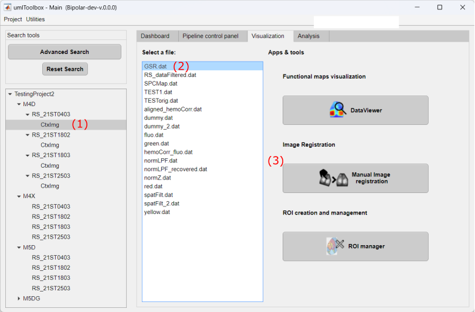
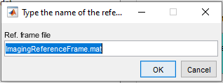
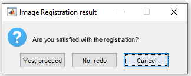
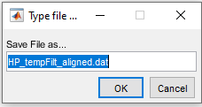

Geometric transformations applied in our image registration algorithm
The manual image registration tool is available from the Visualization tab of the umIToolbox app. This tool uses landmarks to align a recording to a reference frame. The landmark selection is performed interactively using Matlab's control-point selection tool cpselect. Then, the geometric transformations used to fit the points to the reference frame is applied to the target imaging file.
The geometric transformations performed by our image registration algorithm are: translation, rotation and scaling. Other transformations such as reflection or shearing are not applied.
Geometric transformations applied in our image registration algorithm
First of all, open you project file in umIToolbox app and go to the Visualization tab. Here, we assume that a reference frame file was created and saved in the subject's folder. For instructions on how to create a reference frame, read the documentation of the ROImanager app.
Here are the steps to manually align an imaging recording to a reference frame:
To select a file to align with the reference frame, click on the item in the object tree containig the recording (1), select the file from the file list (2) and launch the Manual image registration tool (3):

Step 1: select the file to align and launch the Manual image registration tool.
Then, type the name of the Imaging reference frame file:

Important
The Imaging reference frame file must be stored in the subject's folder!
The Manual image registration tool will load the reference frame from the ImagingReferenceFrame.mat and a target frame. The target frame is automatically extracted from an imaging file similar to the one used to create the reference frame. For instance, if you used the data stored in the file green.dat to create the reference frame the tool will extract a frame (target frame) from the green.dat file located in the same folder as the input file (i.e. the file that you want to align).
Note
If the file containing the target frame is not found in the recording's folder, a dialog box will appear so you can choose a file to be used to register with the reference frame!
Now, the reference and target frames will be loaded in the cpselect interface to choose the landmarks (control-points). Both frames are spatially filtered to highlight the images' landmarks such as blood vessels and bone sutures. The target and reference frames are shown in the left and righthand sides of the interface respectively. Use the top (zoomed) axes to create the control points.
To create the control points, click on the landmarks in both images sequentially. You can click and drag the individual control points to perform adjustments.
Tip
For better results, use at least 3 control points covering as much surface as possible on the image.
Step 2. Select the landmarks on both the reference frame (right) and the target frame (left).
Finally, close the window when you are done.
Once the cpselect interface is closed, the tool will perform the registration of the target frame to the reference frame. A figure will appear showing the result of the registration. The image on the top shows a pseudo-colored overlay of the reference (bottom left) and the registered frame (bottom right). To help you with the visual inspection of the registration, you can use the mouse cursor to hover over any of the images and see the respective points in the others.
Step 3. Validation of the registration process by visual inspection.
Now, close the figure to continue. A dialog box will open with options:
To apply the registration to the input file, click on Yes, proceed. If the registration was unsuccessful, you can redo the control point selection by clicking on No, redo.
Once confirmed, type the name of the new file with the aligned data and click Ok:
Now, the geometric transformations will be applied to each frame of the input file and saved to a .dat file in the object's save folder.